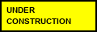

GeoCities / WallStreet/7
Markets, IPOs, Netscape stock jokes.
Visitor #0
Early free homepage host culture (Beverly Hills Internet → GeoCities). Neighborhoods, hit counters, guestbooks, and “under construction” are features, not bugs. Keep the glitter light — peak sparkle is later.